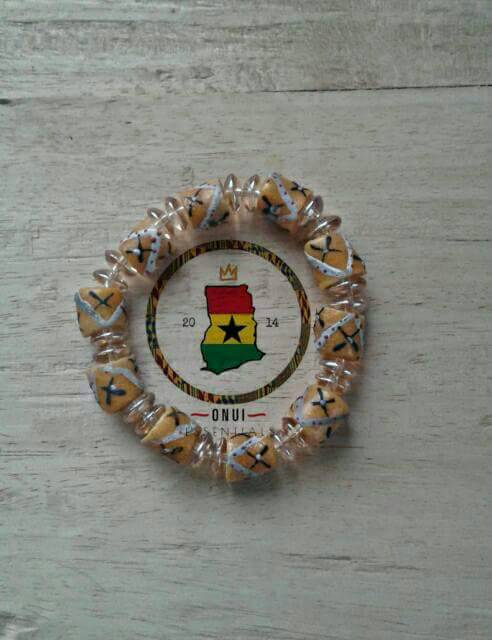

Constructed with glass seed beads in varying sizes
• Finished with a colorful handmade paper bead and a signature BeadforLife tag
• Jewelry pairing suggestions*: Sanyu Bangle Bracelet, Zola Band Bracelet, East African Wrap Bangle, Aspire Bracelet

The Sanyu Bangle Bracelet is one of our most popular items
and can be worn individually for a delicate accent or in multiples to
create the look of a stylish cuff bracelet. This bracelet is both beautiful and
meaningful, because it is a symbol of how small things can change the world.
Available in solid or variegated (striped / textured) colors.

• Size: 7" - 8"
• Constructed with glass seed beads in varying sizes
• Finished with a colorful handmade paper bead and a signature BeadforLife tag
• Jewelry pairing suggestions*: Sanyu Bangle Bracelet, Zola Band Bracelet, East African Wrap Bangle, Aspire Bracelet

A unique take on the trendy wrap bracelet, the Ember Wrap Triple comes in a variety of bright colors to add spark to any outfit. This bracelet is adjustable in length with two different settings.

Opportunities for women to move out of poverty are boundless once they have gained their confidence through Street Business School training.
• Size: 7" - 8"

This delicate bangle features bold color and brass metal beads handmade by artisans in Ethiopia.
Size: 7" - 8"
Our products are handmade from recycled paper; because of this each one is as unique as the woman who made it. You can always ask for something specific in the "Special Requests" field above.